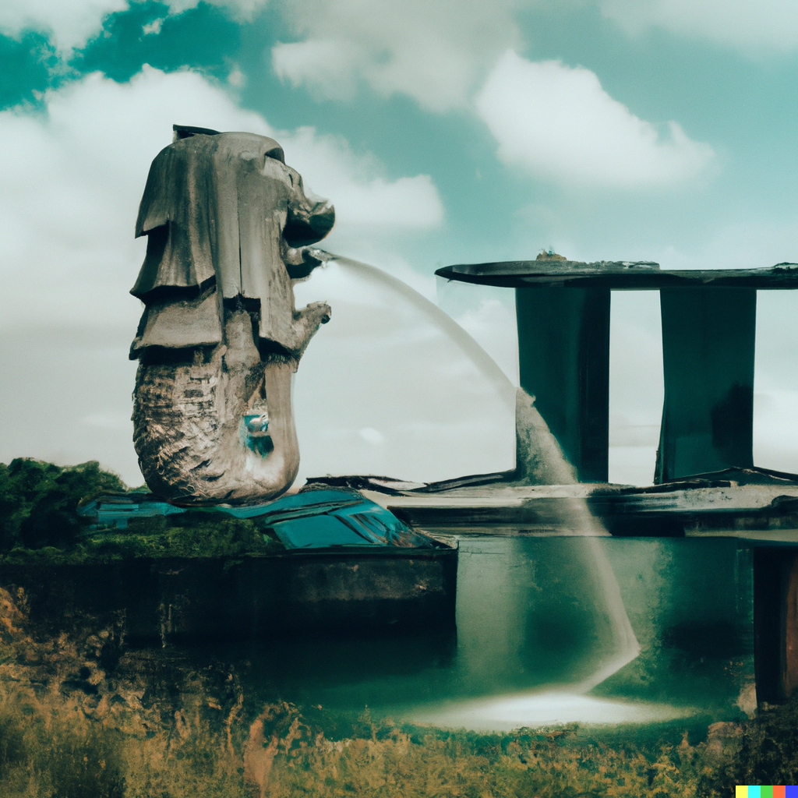

Sim card

SMRT (Singapore Mass Rapid Transit) is a transportation system that plays a crucial role in the daily lives of many Singaporeans. It provides an efficient and reliable mode of transportation that connects various parts of Singapore. If you're new to Singapore or have never used SMRT before, you may be wondering how to use it. In this article, we'll provide you with some tips on how to use SMRT effectively and efficiently.
Planning Your Journey
The first step to using SMRT is to plan your journey. This means identifying your starting point, destination, and the route you will take. SMRT has a comprehensive network of trains and buses, and there are many ways to get from one place to another. You can use the SMRT website or mobile app to plan your journey. The website and app provide you with real-time information on train and bus schedules, routes, and fares.
Buying Your Ticket
Once you have planned your journey, the next step is to purchase your ticket. SMRT offers a variety of ticketing options, including the Singapore Tourist Pass, EZ-Link card, and Standard Ticket. The Singapore Tourist Pass is a special pass designed for tourists that allows unlimited travel on buses and trains for a specific period. The EZ-Link card is a contactless card that you can top up and use for multiple trips. The Standard Ticket is a one-time use ticket that you can purchase at the station.
Entering the Station
When you arrive at the station, you will need to enter through the gantry using your ticket or card. If you are using an EZ-Link card, simply tap the card on the card reader at the gantry. If you are using a Standard Ticket, insert the ticket into the ticket reader at the gantry.
Boarding the Train
Once you have entered the station, you can proceed to the platform and wait for the train. Be sure to check the electronic display board for the train arrival time and the direction of the train. When the train arrives, wait for the passengers to alight before boarding the train. The doors will open automatically, and you can enter the train.
Exiting the Station
When you arrive at your destination station, you will need to exit through the gantry. If you are using an EZ-Link card, simply tap the card on the card reader at the gantry. If you are using a Standard Ticket, insert the ticket into the ticket reader at the gantry. Be sure to keep your ticket or card handy as you may need it to transfer to another mode of transportation.
In conclusion, SMRT is an efficient and reliable transportation system that is easy to use once you know the basics. By planning your journey, buying your ticket, entering the station, boarding the train, and exiting the station, you can make your SMRT experience a smooth and hassle-free one. Remember to always check for updates on train and bus schedules, as well as any service disruptions or delays. With these tips, you'll be able to navigate SMRT with ease and get to your destination in no time.